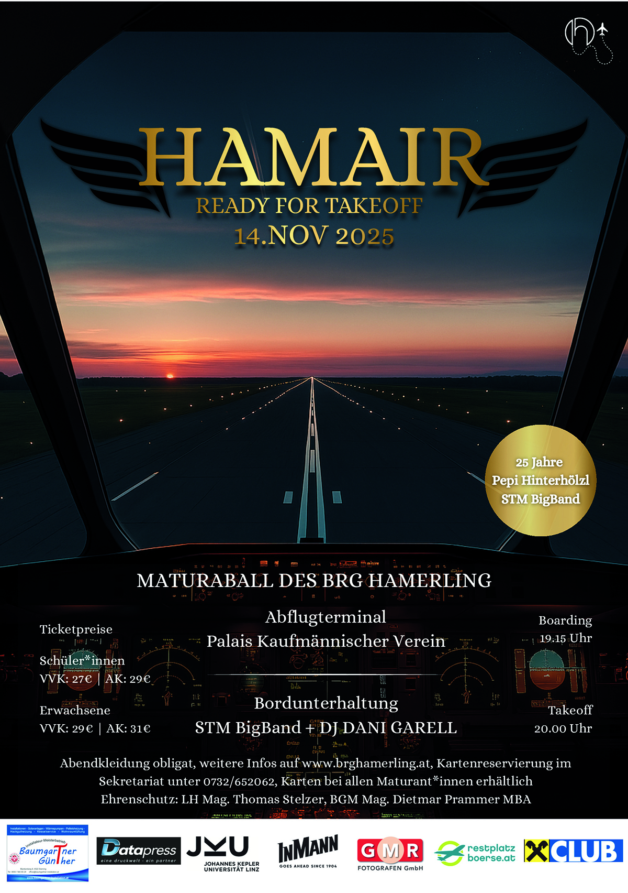
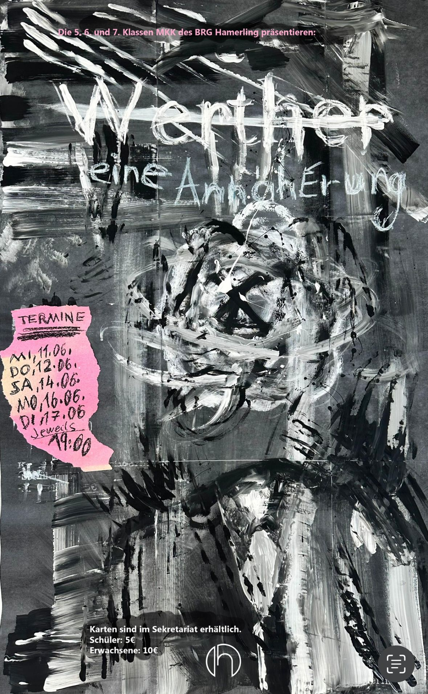

Gemeinsam für unsere Kinder
Der Elternverein des BRG Linz Hamerlingstraße vertritt die Interessen der Eltern, unterstützt schulische Projekte und ist Ansprechpartner bei Fragen rund um die Schulzeit Ihres Kindes.
Neuigkeiten & Fotos
Mitteilungen und Impressionen aus dem Vereinsleben.
Wir suchen Sponsoren für das Projekt „Schulpsychotherapie“
Die Schulpsychotherapeutin, die wir mit dem Geld des Elternvereins seit dem Sommersemester 2021 finanzieren, ist eine große Bereicherung für unsere Schüler*innen. Da wir von offizieller Seite bis dato keine Unterstützung erhalten, brauchen wir für die Weiterführung dringend Sponsoren. Bitte meldet euch über das Kontaktformular oder per E-Mail an elternverein@brghamerling.at mit euren Ideen.
Mehr Infos (PDF)
Maturaball BRG Hamerling 2025

„Werther“ – eine Annäherung

Rückblick auf ein gelungenes Sommerfest
Wir bedanken uns bei allen Eltern für ihre köstlichen Kuchenspenden und danke auch den Helfer*innen, die uns im Verkauf und bei der Organisation unterstützt haben! Am Schulfest haben wir € 1.026,- eingenommen, die unseren Kindern zugutekommen.


Anschaffung der Boulderwand
Beim Bouldern werden nahezu alle Muskelgruppen angesprochen – ein echtes Ganzkörpertraining, das auch Balance, Koordination und strategisches Denken schult. Aus diesen Gründen wurde 2018 eine Boulderwand angeschafft, die der Elternverein mit € 5.000,- unterstützte.


Wer wir sind und was wir tun
Unsere Mission
Der Elternverein des BRG Hamerling sieht sich als Partner der Schule und als Vertretung der Interessen der Eltern und Erziehungsberechtigten. Wir fördern die Zusammenarbeit und Kommunikation, unterstützen schulische Projekte finanziell und ideell und tragen zu einem positiven Schulklima bei.
Unser Ziel ist es, die bestmöglichen Rahmenbedingungen für die Ausbildung und persönliche Entwicklung unserer Kinder zu schaffen. Wir organisieren Veranstaltungen, bieten Unterstützung bei schulischen Herausforderungen und sind Ansprechpartner für Ihre Anliegen.
Unser Leitbild
„Wir sehen es als unsere wichtigste Aufgabe, die Schulgemeinschaft zu unterstützen und so unseren Beitrag zu einem guten Schulklima zu leisten.“
Als Elternverein sind wir mit drei Stimmen im Schulgemeinschaftsausschuss (SGA) vertreten und bringen die Interessen der Eltern ein. Gemeinsam mit Lehrer- und Schülervertreter*innen werden hier wichtige Schulthemen behandelt.
Zusätzliche Lehr- und Freizeitmittel werden vom Elternverein angeschafft. Bei Problemen zwischen Eltern, Schüler*innen und Schule kann der Elternverein als Vermittler kontaktiert werden. Bedürftige Schüler*innen werden bei Schulveranstaltungen und -projekten finanziell unterstützt.
Mitgliedsbeitrag, Spind & Co.
Alles rund um Beiträge, Unterstützung und den Ablauf bei Problemen – zum Nachschlagen.
Mitgliedsbeitrag
Der jährliche Mitgliedsbeitrag beträgt € 17,- für 1 Kind; für jedes weitere Kind zusätzlich € 5,- (Versicherungsbeitrag). Bitte bis zum 15. Oktober des jeweiligen Schuljahres einzahlen.
Bankverbindung: Elternverein des BRG Hamerlingstraße
IBAN: AT63 3400 0000 0136 8968
Zusätzliche Spenden sind jederzeit willkommen und helfen uns bei der Erfüllung unserer vielfältigen Aufgaben.
Garderobenschrank (Spind)
Es besteht für die Schüler*innen die Verpflichtung, einen verschließbaren Garderobenschrank zum Preis von € 10,- pro Schuljahr zu mieten.
Bankverbindung: Elternverein des BRG Hamerlingstraße
IBAN: AT63 3400 0000 0136 8968
Bitte den Namen und die Klasse des Kindes in der Zahlungsreferenz angeben!
Bei Verlust des Spindschlüssels sind € 20,- für den Tausch des Schlosses zu bezahlen. Dieser Betrag wird nicht mehr refundiert, wenn das Schloss bereits getauscht wurde.
Finanzielle Unterstützung
Der Elternverein kann grundsätzlich nur Mitglieder finanziell unterstützen. Um Mitglied zu werden, zahlen Sie bitte den Mitgliedsbeitrag bis zum 15. Oktober des jeweiligen Schuljahres ein.
Der EV gewährt einen Zuschuss zu Schulveranstaltungen von max. 50 %, um die Teilnahme bedürftiger Schüler*innen zu ermöglichen. Suchen Sie dazu bitte das Gespräch mit dem*der Klassenlehrer*in oder wenden Sie sich mittels Formular direkt an den Elternverein.
Der Elternverein bevorzugt, den zu fördernden Betrag direkt an den*die Veranstalter*in zu bezahlen. Bitte stellen Sie den Förderantrag daher so früh wie möglich – vor der Veranstaltung! – und geben Sie den Zugangscode von edu.PAY an.
Schüler-Unfallversicherung
Leistungen aus der Kollektiv-Unfallversicherung werden nur ausgezahlt, wenn Sie den Versicherungsbeitrag (der mit dem Elternvereinsbeitrag eingezahlt wird) bis zum 1. Oktober des laufenden Schuljahres eingezahlt haben.
Detailinformationen entnehmen Sie bitte der Polizze.
Rechte und Pflichten des Elternvereins
- Recht auf Information: Einblick in Erlässe und Information über das Schulgeschehen.
- Recht auf Anhörung: Vorschläge, Wünsche und Beschwerden an Schulleitung und Klassenvorstand.
- Recht auf Mitbestimmung: Gewählte Klassenelternvertreter*innen dürfen an pädagogischen Konferenzen teilnehmen (SchUG § 57 Abs. 5, § 61 Abs. 2).
- Entsendungs- und Vorschlagsrecht in den Schulgemeinschaftsausschuss.
- Wahrnehmung der Aufgaben gemäß § 63 SchUG.
- Aktive Mitwirkung an der Partnerschaft zwischen Eltern, Schülern und Schule.
- Unterstützung der Eltern bei der Geltendmachung ihrer Rechte nach dem SchUG.
- Förderung des Unterrichts durch enge Zusammenarbeit mit den Lehrer*innen.
- Wahrnehmung der Elterninteressen bei Schulwegsicherung, Sport- und Spielplätzen sowie Schulbahn- und Berufsberatung.
- Hilfe und Unterstützung für bedürftige Schüler*innen.
- Wahrung des Erziehungsrechtes der Eltern und Förderung positiver Erziehungseinflüsse.
- Beratung und Weiterbildung der Eltern im Bereich Bildung und Erziehung.
Verlust eines Spindschlüssels
Folgen Sie bitte diesen Schritten, um das Problem schnellstmöglich zu lösen:
- Gründlich suchen: alle möglichen Orte prüfen, an denen der Schlüssel zuletzt verwendet wurde.
- Schulwart fragen: möglicherweise wurde der Schlüssel dort abgegeben.
- Fundamt Linz kontaktieren, falls der Schlüssel nicht auftaucht.
- Sekretariat informieren über den Verlust.
- Schlosstausch bezahlen: € 20,- für neuen Schlüssel und Tausch (siehe „Garderobenschrank").
- Zahlungsbeleg vorlegen bei Frau Mag. Antretter oder dem Schulwart.
Unfall in der Schule / am Schulweg
- Sofortige Hilfe leisten: Erste Hilfe für die verletzte Person sicherstellen.
- Meldung im Sekretariat so zeitnah wie möglich.
- Unfallbericht ausfüllen im Sekretariat.
- Schule übernimmt Unfallmeldung an Eltern und Versicherung.
- Belege dokumentieren: alle Rechnungen (z. B. Bergung, Spezialist*innen) aufbewahren.
- Meldung an Zusatzversicherung über Schule und Elternverein.
Leih-iPad defekt / beschädigt
- Meldung im Sekretariat: Problem umgehend melden.
- Tausch in der Schule: das Sekretariat organisiert den Austausch.
- Abwicklung mit der Versicherung übernimmt Sekretariat und/oder Elternverein.
Vereinsstatuten (Volltext)
Die Vereinsstatuten sind das rechtsverbindliche Gründungsdokument und liegen daher nur in deutscher Sprache vor.
des Elternvereins des Bundesrealgymnasiums Linz, Hamerlingstraße · Stand März 2020
§ 1 Name und Sitz des Vereines
(1) Der Verein führt den Namen „Elternverein des Bundesrealgymnasiums Linz, Hamerlingstraße" und hat seinen Sitz in Linz.
(2) Er ist der Elternverein im Sinne des Schulunterrichtsgesetzes BGBl. Nr. 139/1974 idgF.
§ 2 Aufgaben des Vereines
(1) Der Verein hat die Aufgabe, Vorschläge im Sinne des § 64 Abs. 2 SchUG zu erstatten, Stellungnahmen zu Unterrichtsmitteln (§ 54 Abs. 3 SchUG) abzugeben und Vertreter*innen in den Schulgemeinschaftsausschuss (§ 65 SchUG) zu entsenden.
(2) Der Verein verfolgt weiters den Zweck, in Fühlungnahme mit der Schule die Erziehung und den Unterricht der Schüler*innen zu fördern, das Verständnis zwischen Eltern und Lehrer*innen zu leben und Veranstaltungen der Schule ideell wie materiell zu unterstützen.
(3) Dazu dienen Zusammenkünfte von Eltern und Lehrkörper, Vorträge und Veranstaltungen sowie finanzielle Unterstützungen für Schüler*innen.
(4) Der Verein ist Mitglied des Landesverbandes der Elternvereine an höheren und mittleren Schulen in Oberösterreich.
(5) Eine parteipolitische Tätigkeit ist im Rahmen des Vereines ausgeschlossen.
§ 3 Mitgliedschaft
(1) Mitglied kann ein*e Erziehungsberechtigte*r eines Schülers/einer Schülerin werden.
(2) Die Mitgliedschaft wird durch Einzahlung des Mitgliedsbeitrages erworben.
(3) Die Mitgliedschaft erlischt durch schriftliche Austrittserklärung, bei Zahlungsverzug trotz Mahnung, mit Schulaustritt des Kindes (mit Übergangsfrist für Vorstandsmitglieder bis zur nächsten JHV) oder durch Ausschluss wegen Verletzung der Vereinsinteressen.
§ 4 Rechte und Pflichten der Mitglieder
(1) Mitglieder haben Sitz und Stimme in der Hauptversammlung, das Recht zur Teilnahme an Veranstaltungen sowie das aktive und passive Wahlrecht zum Elternausschuss.
(2) Mitglieder sind verpflichtet, den festgesetzten Mitgliedsbeitrag zu entrichten und die Bestrebungen des Vereines nach Kräften zu unterstützen.
§ 5 Vereinsorgane
Die Organe des Vereines sind die Hauptversammlung, der Elternausschuss und der Vorstand.
§ 6 Die Hauptversammlung
Die ordentliche Hauptversammlung (HV) findet alle 2 Jahre statt; eine außerordentliche HV kann der Elternausschuss einberufen und muss auf Verlangen von mindestens einem Zehntel der Mitglieder binnen vier Wochen stattfinden. Einladung schriftlich mit Tagesordnung mind. zwei Wochen vorher. Anträge können bis eine Woche vor der HV schriftlich beim Obmann eingebracht werden. Die HV ist ohne Rücksicht auf die Anzahl der Anwesenden beschlussfähig; Beschlüsse mit einfacher Mehrheit, bei Stimmengleichheit entscheidet die*der Vorsitzende, für die Vereinsauflösung ist Zweidrittelmehrheit nötig. Über die HV wird ein Protokoll geführt.
§ 7 Aufgaben der HV
Entgegennahme des Rechenschaftsberichts, Entlastung des Vorstandes, Wahl des Vorstandes und zweier Rechnungsprüfer*innen, Festsetzung des Mitgliedsbeitrages sowie Beschlussfassung über Statutenänderungen, die Vereinsauflösung und sonstige vorgelegte Angelegenheiten.
§ 8 Der Elternausschuss
Der Elternausschuss besteht aus dem Vorstand und den Elternvertretungen. Elternvertreter*innen pflegen die Verbindung zwischen Elternausschuss und den einzelnen Klassen. Scheidet ein Mitglied vorzeitig aus, kann der Elternausschuss eine Ersatzperson kooptieren. Sitzungen beruft der Obmann nach Bedarf ein; auf Verlangen von fünf Mitgliedern binnen zwei Wochen. Beschlussfassung mit einfacher Mehrheit, bei Gleichstand entscheidet der Obmann.
§ 9 Der Vorstand
Der Vorstand besteht aus Obmann/Obfrau und Stellvertreter*in, Schriftführer*in, Kassier*in und Beiräten. Er wird von der HV für 2 Jahre gewählt und führt die laufenden Geschäfte, insbesondere die Einberufung der HV, den Rechenschaftsbericht und die Umsetzung der HV-Beschlüsse.
§ 10 Der Obmann
Der Obmann bzw. die Obmann-Stellvertreter*innen vertreten den Verein nach außen und leiten die Sitzungen von Hauptversammlung, Elternausschuss und Vorstand.
§ 11 Vereinsmittel
Die Mittel des Vereines stammen aus Mitgliedsbeiträgen und sonstigen Einnahmen. Der Beitrag ist unabhängig von der Kinderzahl nur einmal zu entrichten; bei berücksichtigungswürdigen Gründen kann der Elternausschuss davon ganz oder teilweise befreien.
§ 12 Zeichnungsberechtigung
Schriftstücke im Namen des Vereines bedürfen der Unterschrift von Obmann und Schriftführer*in; bei finanziellen Angelegenheiten unterzeichnet an Stelle der*des Schriftführer*in der*die Kassier*in.
§ 13 Schiedsgericht
Streitigkeiten aus dem Vereinsverhältnis werden durch ein Schiedsgericht entschieden, das von den Parteien besetzt wird; gegen dessen Entscheidung ist kein Rechtsmittel zulässig.
§ 14 Vermögen bei Auflösung des Vereines
Bei freiwilliger Auflösung wird das Vereinsvermögen einem dem Vereinszweck entsprechenden Zweck zugeführt, andernfalls dem Amt der o.ö. Landesregierung – Jugendreferat – übergeben.
Unser Team
Die Gesichter hinter dem Elternverein.
Gudrun Ronacher
Obfrau
Petra Schwarzenberger
Obfrau Stv.
Thomas Wiener
Kassier
in Kürze …
Schriftführerin
Vera Rachbauer
Rechnungsprüferin
Thomas Lambert
Rechnungsprüfer
Klassenelternvertreter*innen 2024/2025
Ihre Ansprechpartner*innen in den Klassen.
| Klasse | Vertreter*in | Stellvertreter*in |
|---|---|---|
| 1A | JEDINGER Elisabeth | OBERNDORFER Margit |
| 1B | WEINMAYER-RICHTER Eva | HESCH Anton |
| 1C | KAUFMANN Philipp | STRUKAR Selmir |
| 1D | METZ Christine | LEITNER Sybille |
| 1E | MASCHER Erwin | ZACHBAUER Lydia |
| 1M | HARRER-NEMECEK Marion-Julia | SCHWEIGER Elke |
| 2A | KRÖS Andreas | NUTZ Monika |
| 2B | Ing. ZEHETHOFER Jürgen | FREUDENTHALER Sabrina |
| 2D | SCHWARZENBERGER Petra | KARGL Michaela |
| 2M | JAKOB Gerhard | GEINITZ Anja |
| 3A | VUCIC Andelka | GLASER Maria |
| 3B | GRALL David | RABER Julia |
| 3C | ABLINGER Martina | LANG Andrea |
| 3D | LIPP Manuel | GIERLINGER-ZÖCHMANN Teresa |
| 3E | ALIRIFA Donika | Mag.a FALKNER-GARTENAUER Jane |
| 3M | WIENER Thomas | PAULOWITSCH-LASKOWSKI Lisa |
| 4A | ZEHETHOFER Jürgen | BINDER Markus |
| 4B | Ing. GÖHRING Christian | SEEBACHER Daniela |
| 4C | – | – |
| 4D | DURGUTI Sabahate | RUMPLMAIER Sabine |
| 4E | NEUNLINGER Daniel | LASA Claudia |
| 4M | SCHWARZENBERGER Petra | STUHLBERGER-PFEIFER Doris |
| 5LIA | SATOROVIC Elmana | GRALL Daniel |
| 5LIB | JAHIC Elvedin | KLIMMER Marion |
| 5MED | FRIEDL Werner | SCHNEIDER Stefanie |
| 5MKK | Mag. SAHAT Seki | WALLINGER Cornelia |
| 6LIA | – | – |
| 6LIB | – | – |
| 6LIC | KIRSCHNER Günter | KAPELLER Andreas |
| 6MED | KRASSNIG Bernd | GRUBICH Petra |
| 6MKK | HUBER Michaela | HAUNSCHMIDT Tanja |
| 7LIA | MAURER Christian | JURDA Brigitte |
| 7LIB | KLIMMER Ronald | REINDL Astrid |
| 7MED | FRIEDL Werner | RACHBAUER Vera |
| 7MKK | DALKILIC Dagmar | RONACHER Gudrun |
| 8A | – | – |
| 8B | – | – |
| 8C | WIESAUER Cornelia | RACHBAUER Vera |
| 8M | BADER-HALBWIRTH Jasmin | BERER Daniela |
Terminkalender
Wichtige Termine und Veranstaltungen im Überblick.
Dokumente & nützliche Links
Formulare, Protokolle, Berichte zum Herunterladen sowie hilfreiche externe Anlaufstellen.
Downloads
Vereinsdokumente & Protokolle
Formulare & Anträge
Berichte & Vorträge
Nützliche externe Links
Jugend und Beruf
Hilfe in Krisen
Finanzielle Unterstützungen & Förderungen
Digitale Medien
Weitere Einrichtungen
Kontaktieren Sie uns
Wir freuen uns auf Ihre Nachricht.
Impressum & Datenschutz
Impressum
Elternverein des Bundesrealgymnasiums Linz, Hamerlingstraße
Hamerlingstraße 18, 4020 Linz
Entstehungsdatum des Vereins: 29.03.1951
ZVR-Zahl: 463107582
Gerichtsstand: Linz
Vertretungsberechtigte Personen:
Obfrau: Gudrun Ronacher
Obfrau Stv.: Petra Schwarzenberger
Kassier: Thomas Wiener
Schriftführerin: (wird noch bekannt gegeben)
E-Mail: elternverein@brghamerling.at
Datenschutzerklärung
Die Datenschutzerklärung ist ein rechtlicher Text und liegt daher nur in deutscher Sprache vor.
Wir nehmen den Schutz Ihrer persönlichen Daten sehr ernst und behandeln Ihre personenbezogenen Daten vertraulich entsprechend den gesetzlichen Datenschutzvorschriften.
Die Nutzung unserer Webseite ist in der Regel ohne Angabe personenbezogener Daten möglich. Soweit personenbezogene Daten erhoben werden, erfolgt dies stets auf freiwilliger Basis.
Datenerfassung auf dieser Website
Der Provider der Seiten erhebt automatisch Informationen in Server-Log-Dateien, die Ihr Browser übermittelt: Browsertyp/-version, Betriebssystem, Referrer-URL, Hostname, Uhrzeit der Serveranfrage und IP-Adresse. Eine Zusammenführung mit anderen Datenquellen erfolgt nicht.
Kontakt per E-Mail
Wenn Sie uns per E-Mail kontaktieren, speichern wir Ihre Angaben zur Bearbeitung der Anfrage und für Anschlussfragen. Diese Daten geben wir nicht ohne Ihre Einwilligung weiter.
Ihre Rechte
Sie haben jederzeit das Recht auf unentgeltliche Auskunft über Ihre gespeicherten Daten sowie ein Recht auf Berichtigung, Sperrung oder Löschung. Wenden Sie sich dazu an die im Impressum angegebene Adresse.